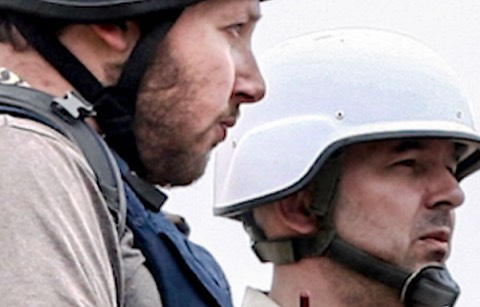

Screening event · Double Exposure 2022
Shortcuts
Friday, October 14, 2022 · 3:00 PM · Naval Heritage Center
Discussion with filmmakers to follow screenings.
Films discussed
 8 Days at WareRachel Lauren Mueller · Anne Sundberg · Yoruba Richen, Meg Shutzer2022 · 27 min
8 Days at WareRachel Lauren Mueller · Anne Sundberg · Yoruba Richen, Meg Shutzer2022 · 27 min Blue RoomMerete Mueller2022 · 12 min
Blue RoomMerete Mueller2022 · 12 min The Family StatementGrace Harper, Kate Stonehill2022 · 15 min
The Family StatementGrace Harper, Kate Stonehill2022 · 15 min- The Other Little Black BookBarbara Corbellini Duarte, Mark Adam Miller2022 · 15 min

Sealed in BloodSofian Khan2022 · 10 min Strands of ResistanceBrent Huffman2022 · 22 min
Strands of ResistanceBrent Huffman2022 · 22 min